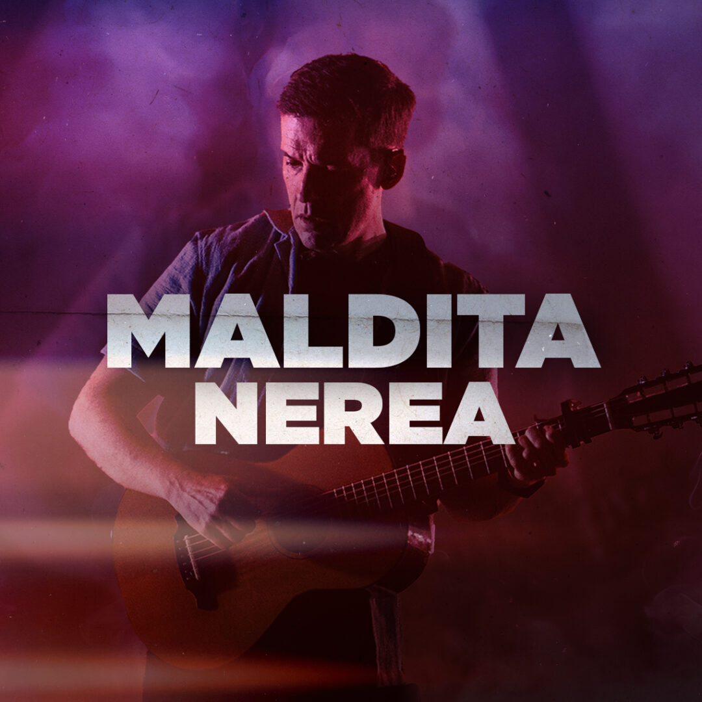

Maldita Nerea: Himnos Tour — Movistar Arena
+
Maldita Nerea: Himnos Tour 16/12
Artista: Maldita Nerea
Fecha: 16/12/2025
Lugar: Movistar Arena
Duración: 90 minutos
Apertura de puertas: 19:30 h
Horario: Inicio 21:00 h
Precio: Desde 42 €
Maldita Nerea regresa al Movistar Arena de Madrid en diciembre de 2025 para ofrecer un concierto épico que promete ser un recorrido vibrante por todos sus himnos. El grupo invita a sus seguidores, las 'Tortugas', a unirse en esta cita musical donde la banda celebrará su trayectoria y repasará los grandes éxitos que han marcado a varias generaciones con su característico pop-rock optimista. Este esperado evento servirá como el punto culminante del año. Un encuentro imprescindible para cantar a coro sus canciones más emblemáticas y vivir una noche de conexión y energía inigualable.